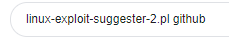
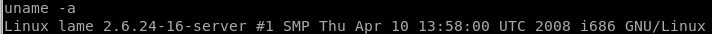

Index
privilege escalation
since gaining control of the user makis through our exploitation of distcc, we'll have to escalate our privileges to rootlets use uname -a to get the kernel version of the victim target and run it against a linux privilege escalator script
./linux-exploit-suggester-2.pl -k 2.6.32
find the github here:


now we can check the exploit suggestor script against the kernel version of our victim machine, to get the version we can use the uname -a command
